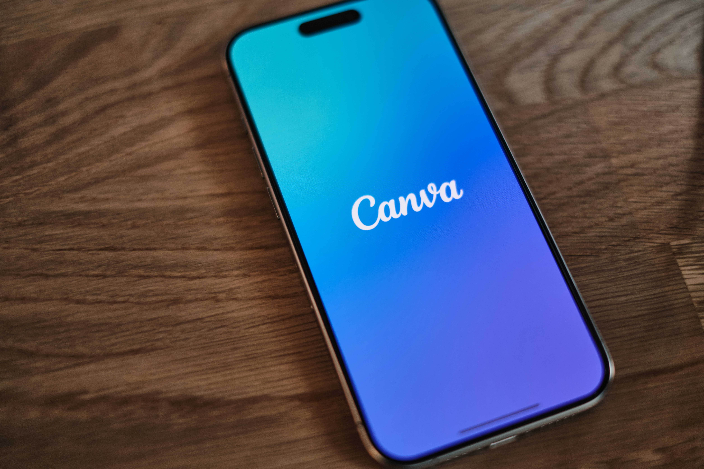
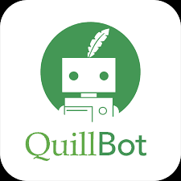

Top 5 Free AI Tools Every Student Should Use in 2025
Written by Nitin | Aug 29, 2025As a student, I’m always looking for ways to study smarter, finish assignments faster, and save time for things I actually enjoy. That’s where AI tools come in. Over the past year, I’ve experimented with a bunch of them, and honestly, some have completely changed the way I learn and work. The best part? Most of them are totally free (at least the basic versions).
In this blog, I’ll share the Top 5 Free AI Tools that I believe every student should try in 2025. These aren’t just random tools — I’ve personally used them for assignments, coding projects, note-making, and even presentations.
1. ChatGPT (Free Plan)

ChatGPT is hands down the tool I use the most. Whether it’s explaining complex coding concepts, generating ideas for essays, or even helping me debug my Python scripts, it’s like having a tutor available 24/7. The free version is more than enough for daily tasks.
- Helps with coding (debugging, explanations, examples).
- Explains topics in simple terms (like a friend, not a textbook).
- Can draft essays, notes, or outlines in seconds.
How I use it: I paste tricky coding errors, ask it to explain in steps, and usually get my answer faster than Googling for 20 minutes.
2. Grammarly

Grammarly has been a lifesaver when it comes to writing emails, assignments, or even blog posts like this one. It catches grammar mistakes, spelling errors, and even suggests better phrasing.
- Fixes grammar and spelling errors instantly.
- Suggests more natural wording.
- Works inside browsers and Google Docs.
How I use it: Before submitting any assignment, I run it through Grammarly to make sure I don’t lose marks for silly mistakes.
3. Notion AI

If you’ve ever used Notion for notes, imagine supercharging it with AI. Notion AI can summarize long notes, create to-do lists automatically, and even answer questions from your own notes. Perfect for exams.
- Summarizes long study notes.
- Creates task lists automatically.
- Lets you search your notes with natural language.
How I use it: I dump all my class notes into Notion, then ask it to summarize key points before exams. Way faster than re-reading everything.
4. Canva
Canva is more than just a design tool — it’s a student’s best friend for making presentations, posters, and even resumes. With AI features like “Magic Design,” you can generate slide decks or posters instantly.
- Create presentations faster with templates.
- Use AI-generated designs to save time.
- Make resumes, posters, and infographics easily.
How I use it: Whenever I have a seminar or group project presentation, I build my slides in Canva. It looks professional without much effort.
5. QuillBot
QuillBot is an AI-powered paraphrasing tool. If you’re stuck rephrasing something or want to avoid plagiarism, this tool helps a lot. It also has grammar checking and summarization features.
- Paraphrases text into simpler words.
- Summarizes long articles into key points.
- Includes a free grammar checker.
How I use it: When I’m writing essays, I paste paragraphs into QuillBot to see simpler versions. It helps me avoid repeating the same wording over and over.
💡 Final Thoughts
As a student, time is your most valuable asset. These free AI tools don’t just make studying easier, they make it faster and more efficient. You don’t need to pay for expensive subscriptions right away — just start with the free versions, and upgrade later if you really need advanced features.
Personally, if I had to pick only two, I’d go with ChatGPT for learning and coding, and Grammarly for writing. But honestly, all five together cover almost every area of student life.
Try them out this semester and see how much smoother your study routine becomes!